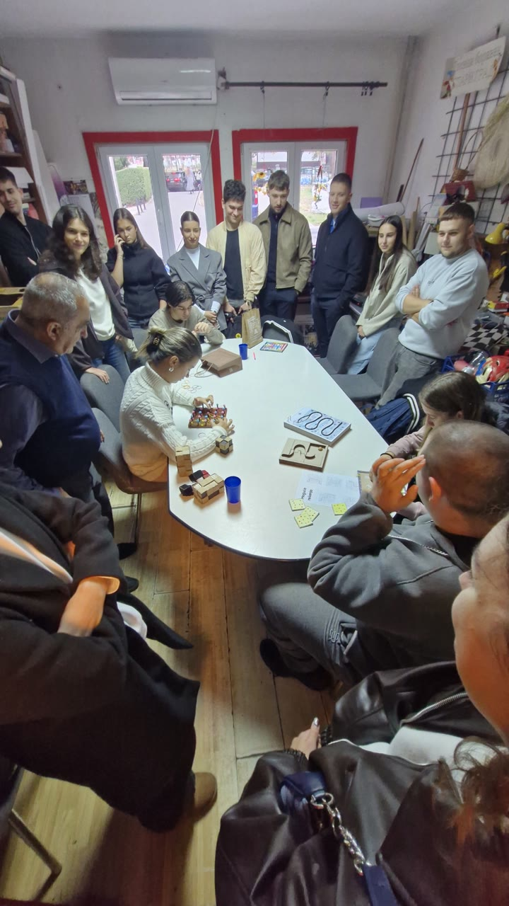

Radovi i primeri / Čas 5
lavirint
Maša Marković121/24
Čas 5
4 prikaza rada · Gradivo časa


U rukama korisnika · 30.10.2026.
2 kadrova sa posete udruženju · cela poseta ↗
Četiri sive pločice lavirinta čitaju se prstima, ali se pri dodiru razmiču po stolu
ViđenoU kadru 87 četiri sive kvadratne pločice sa izdignutim zakrivljenim kanalima donete su na prednji sto, a u kadru 88 složene su u kvadrat 2×2 dok ruka korisnika prstima prati kanal na ugaonoj pločici: pri bočnom pritisku prsta pločice se razmiču jer nemaju zajednički okvir ni međusobne kopče.
Sledeća probaDodati zajednički okvir 2×2 ili čičak-traku na donjoj strani pločica i povećati kontrast između dna kanala i gornje ivice rebra kako bi putanja bila podjednako čitljiva i okom i prstom bez bežanja podloge.


